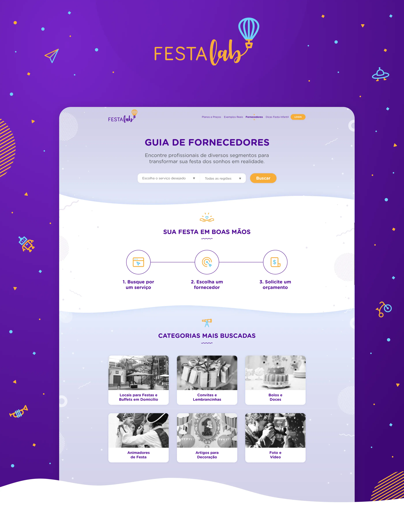
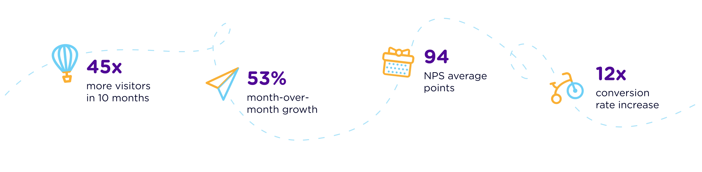
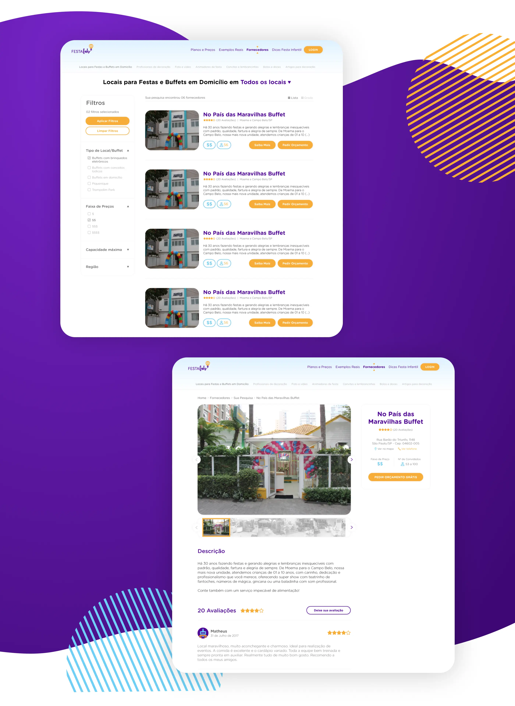
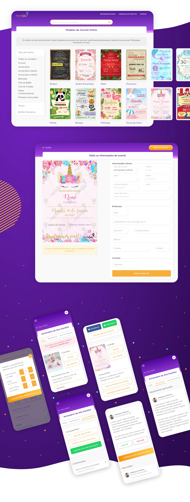
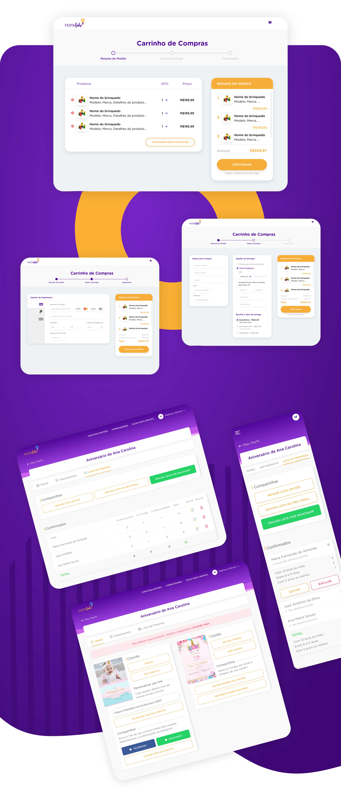

FestaLAB Web App
As FestaLAB's first Product Designer, rebuilt a Typeform-based MVP into a fully automated, responsive web platform for digital children's party invitations — creating the first design system, a B2C sales flow, and a supplier search system. Within 10 months of launch, the product reached 1 million monthly visitors and an NPS of 94%.

Scenario and roles
Regarding the digital invitations market, there weren't as many options in the children's party niche as were in the wedding niche. The main competitors were foreign sites, leaving the customers almost with no options in the national market. Seeking to fill this demand, the startup FestaLAB was born with the goal to offer invitations and web pages for children's parties in a playful and practical way, combining technology and emotion in the process to appeal to this audience through innovation.
As the first Product Designer in the company, I was invited to revamp the minimum viable existing product — at the time, a form in Typeform with manual processes — into a consolidated platform for creating invitations and web pages for children's parties, understanding the needs of the users and ensuring good usability. The challenge was to build a 100% digital, automated and responsive creative product, in addition to creating a new design system for the application.

Deliverables
Once the demands of the public were mapped out from research and surveys done by the team, a cycle focused on two objectives began: a) solving the main problems of the product's MVP in a new platform focused on the creation of invitations and web pages directly by the client and b) building a search system for suppliers of children's parties, in order to attract investment to the business.

The platform was generated with a focus on mobile usage, ensuring responsiveness and ease of use in the creation process. A catalog structure for the digital invitations was created, which also included the creation of a website containing RSVP, gift list, photo gallery, and other relevant features. After the launch, a B2C sales process was implemented, considering all the necessary sales steps to ensure the purchase is made.


Results and learnings
With the new interface solutions, SEO work, and the increase of options in the catalog, the service's growth was vertiginous in the very first months, with an increase of more than 45x in access and use of the product rates, reaching the mark of 1 million visitors per month in less than 10 months and with an NPS of 94%. This resulted in rapid learning and direct improvements based on the needs and desires of the users.
All the work developed brought market recognition and important financial contributions to the company, as reported in articles from main news portals such as Terra, G1, and Estadão.
Working on the structuring of the Startup FestaLAB experience gave me an intense learning experience in a short time frame. I could, many times, act as product leader in the UX area and learn with a qualified and diverse team, contributing in several areas and directly assisting in the exponential growth that the company had in its first months of launch.
The intense contact with the development team greatly improved my vision of how to design aiming at technical viability. Furthermore, essential UX processes such as prototyping, interviews and usability testing had a great impact on my performance and learning.
Team: Matheus Petroni (Product Designer), Erik Santana (CEO), Breno Gazzola (CTO), Victor Molina (Co-Founder), Francisco Bernardino (Developer), Serifaria (Graphic Design Studio).